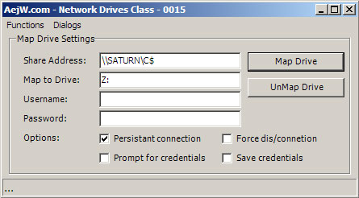

This is a class for interfacing with windows map network drive API's.
using aejw.Network;
NetworkDrive oNetDrive = new aejw.Network.NetworkDrive();
try{
oNetDrive.LocalDrive = "m:";
oNetDrive.ShareName = "\\ComputerName\Share"
oNetDrive.MapDrive();
}catch(Exception err){
MessageBox.Show(this,"Error: "+err.Message);
}
oNetDrive = null; NetworkDrive oNetDrive = new aejw.Network.NetworkDrive();
try{
oNetDrive.LocalDrive = "m:";
oNetDrive.UnMapDrive();
}catch(Exception err){
MessageBox.Show(this,"Error: "+err.Message);
}
oNetDrive = null;
cNetworkDrive oNetDrive = new cNetworkDrive();
//Map drive with current user credentials
oNetDrive.LocalDrive = "m:";
oNetDrive.ShareName = "\\ComputerName\Share1"
oNetDrive.MapDrive();//Map drive with specified user credentials
oNetDrive.LocalDrive = "m:";
oNetDrive.ShareName = "\\ComputerName\Share1"
oNetDrive.MapDrive("Bob_Username","Bob_Password");//Map drive with and prompt user for credentials
oNetDrive.LocalDrive = "m:";
oNetDrive.ShareName = "\\ComputerName\Share1"
oNetDrive.PromptForCredentials = true;
oNetDrive.MapDrive();//Map drive using a persistent connection
oNetDrive.LocalDrive = "m:";
oNetDrive.Persistent = true;
oNetDrive.SaveCredentials = true;
oNetDrive.ShareName = "\\ComputerName\Share1"
oNetDrive.MapDrive("Bob_Username","Bob_Password");//Unmap a network connection
oNetDrive.LocalDrive = "m:";
oNetDrive.ShareName = "\\ComputerName\Share1"
oNetDrive.UnMapDrive();//Unmap a network connection ignoring network related errors
oNetDrive.LocalDrive = "m:";
oNetDrive.Force = true;
oNetDrive.ShareName = "\\ComputerName\Share1"
oNetDrive.UnMapDrive();//Display windows connection dialog
oNetDrive.ShowConnectDialog(this);
//Display windows disconnection dialog
oNetDrive.ShowDisconnectDialog(this);//Restore all persistent connections
oNetDrive.RestoreDrives();LocalDrive and ShareName are now propertys.MapNetworkDrive(...) is now MapDrive(...), etc...Persistant option, Used for reconnecting a drive at logon.SaveCredentials option, Allows windows to remember the user credentials when reconnecting a persistant connection.Force option, for MapDrive calls, if a drive is connected it will disconnect that drive then reconnect to the new share.PromptForCredintals option, for MapDrive calls, windows will ask for a username and password to use with the connection.RestoreDrives function that restores persistent connections.